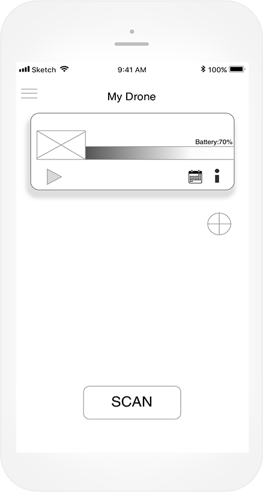
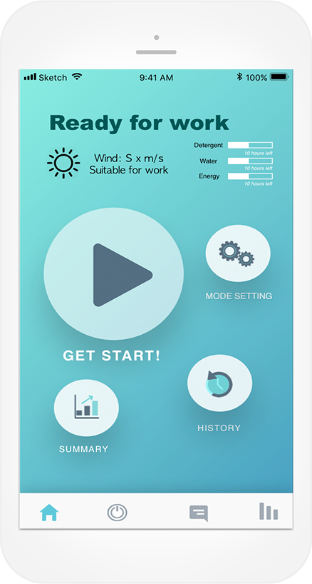
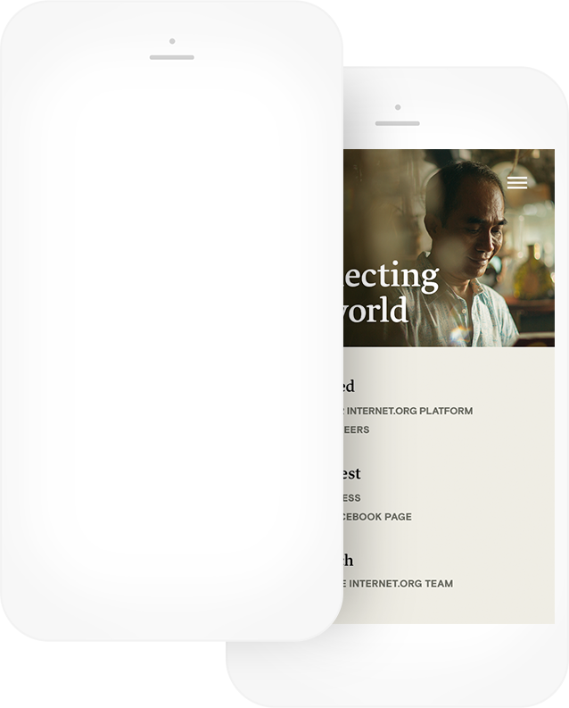
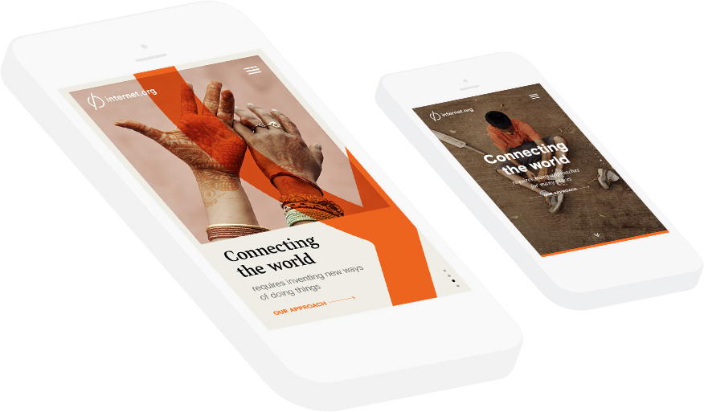
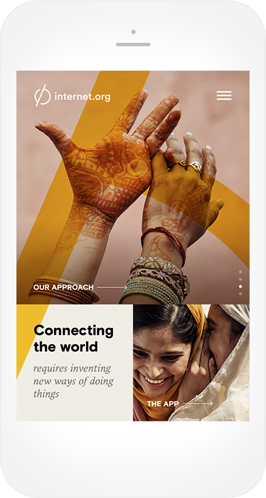

SLIDE BACK

My Portfolio




A SEAMLESS EXPERIENCE
To ease the experience the site was designed to seamlessly take the user to different stories on the homepage. Text, icons and panels moving smoothly to not interrupt the user flow.


